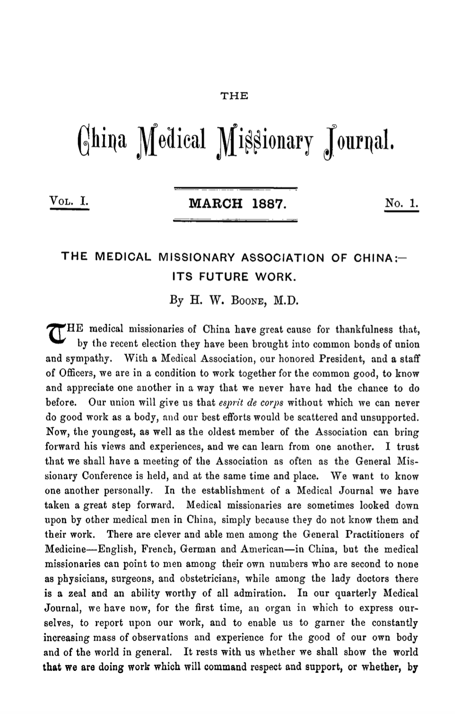

THE China Medical Missionary Journal. VOL. I. MARCH 1887. No. 1.
THE MEDICAL MISSIONARY ASSOCIATION OF CHINA:— ITS FUTURE WORK. By H. W. Boone, M.D.
THE medical missionaries of China have great cause for thankfulness that, by the recent election they have been brought into common bonds of union and sympathy. With a Medical Association, our honored President, and a staff of Officers, we are in a condition to work together for the common good, to know and appreciate one another in a way that we never have had the chance to do before. Our union will give us that esprit de corps without which we can never do good work as a body, and our best efforts would be scattered and unsupported. Now, the youngest, as well as the oldest member of the Association can bring forward his views and experiences, and we can learn from one another. I trust that we shall have a meeting of the Association as often as the General Missionary Conference is held, and at the same time and place. We want to know one another personally. In the establishment of a Medical Journal we have taken a great step forward. Medical missionaries are sometimes looked down upon by other medical men in China, simply because they do not know them and their work. There are clever and able men among the General Practitioners of Medicine—English, French, German and American—in China, but the medical missionaries can point to men among their own numbers who are second to none as physicians, surgeons, and obstetricians, while among the lady doctors there is a zeal and an ability worthy of all admiration. In our quarterly Medical Journal, we have now, for the first time, an organ in which to express ourselves, to report upon our work, and to enable us to garner the constantly increasing mass of observations and experience for the good of our own body and of the world in general. It rests with us whether we shall show the world that we are doing work which will command respect and support, or whether, by

The China Medical Missionary Journal · Vol. I, March 1887